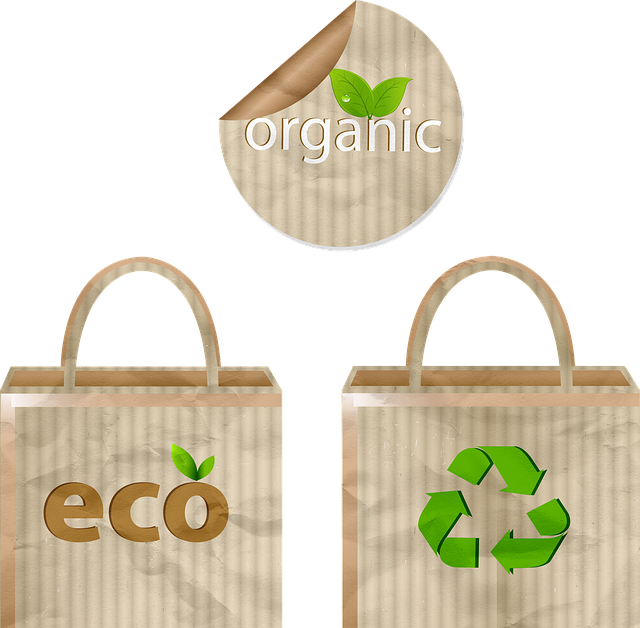
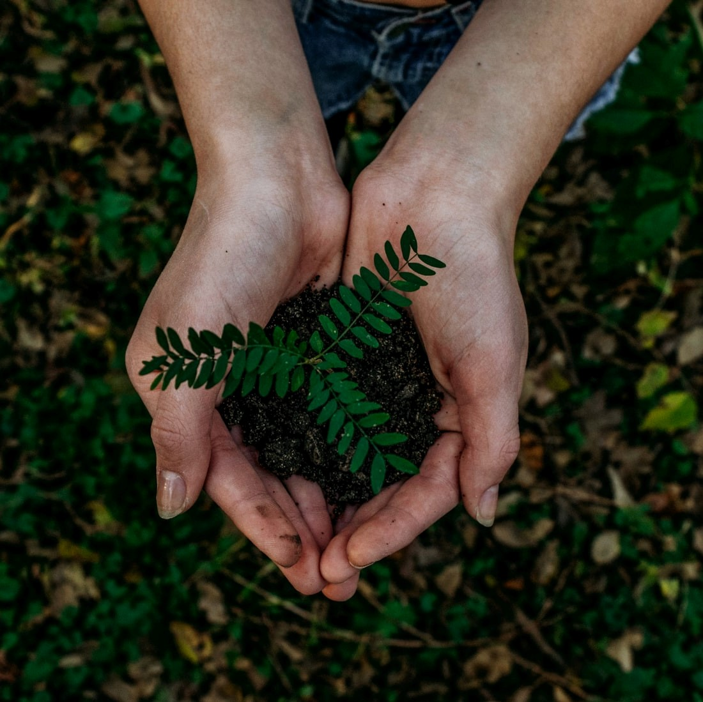

What are Eco-Friendly Products?
Eco-friendly goods are products that, whether in their processing, use or disposal, do not affect the
environment. Eco-friendly, also called environmentally friendly or green, refers to something that
is beneficial for the environment. Some of these green products, when in use, help to save
electricity,
reduce the carbon footprint or greenhouse gas emissions and do not contribute to significant
environmental toxicity or pollution.
Hence, as they are disposed of, they do not affect the ecosystem or disturb the ecological
equilibrium. There are also environmentally conscious items that are made from recycled materials.
The demand for fresh raw materials and the volume of waste sent to landfills and incinerators help
minimize these recycling items (because waste can be diverted to making recycled products).

Why Use Eco-Friendly Products?
Firstly, you can decrease your carbon footprint by using them and they do not affect the environment
or produce any greenhouse gases to be emitted at the point of manufacture or usage. Some help
conserve resources and do not allow excessive environmental toxicity to be applied to the
atmosphere. It is possible to recycle and reuse these objects. There are many
environmentally-friendly items made from recycled materials. The use of environmentally friendly or
renewable goods decreases the production of landfills and waste production.
Look at the consumption levels of the world today. At an extremely rapid rate, items are made, used
and then discarded. If we do not make any attempts now to turn to green alternatives, we will be
surrounded by the contamination and pollutants generated by the processing, use and disposal of
these non-green goods in no time to come. It will also not be sustainable for the recycling
industry, since there is little demand for recycled items. And we're also going to face a major
resource and energy shortage, because of this.

What is Biodegration?
Biodegradation is the process by which a substance is recycled in nature. A better choice is to
change materials, processes and products in such a way that biodegradation in nature can be depended
on, and problems of recalcitrance and bioaccumulation can be solved. We are increasingly evolving
our philosophy and are not only working for pollutant clean-up or elimination, but also for
pollution reduction or biodegradation facilitation.
Biodegradable items are Eco-Friendly. For instance a better alternative to plastic and Styrofoam
products is biodegradable products. Such
goods are free
of hazardous chemicals, compostable and easily available. There are many environmentally friendly
items on the market, including PLA cold cups derived from corn bio resin, entirely compostable hot
cups, souffle cups, pots, utensils, bowls, and take-out containers made of discarded sugarcane
fibre, etc.